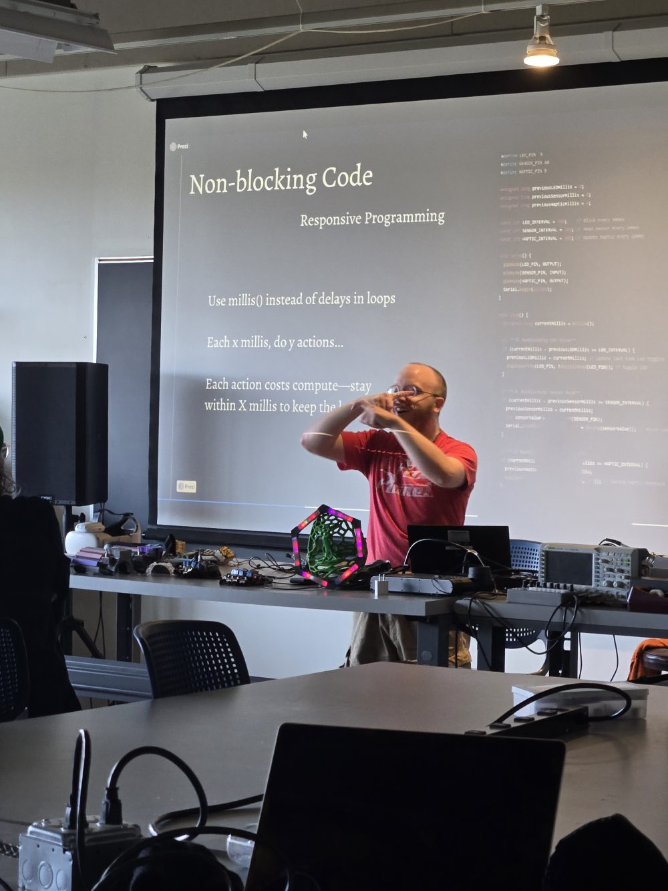

Sonic Interface Designer Dillon Simeone Visits MUC 262 at Portland Community College
Dillon Simeone visited PCC's MUC 262 Interface Design class to present human-centered design for Deaf and Hard-of-Hearing musicians, showcasing the GeLu wearable sensory substitution interface.